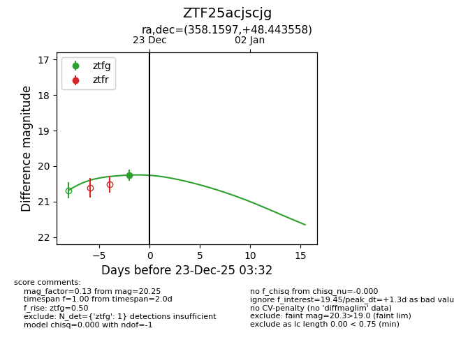
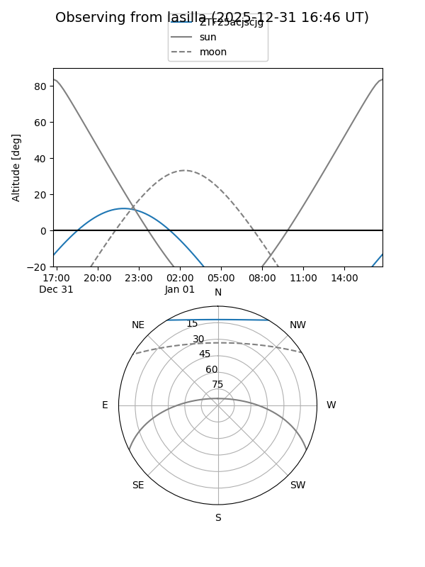
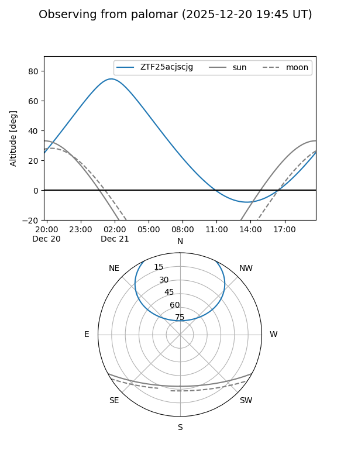

ZTF25acjscjg
Target ZTF25acjscjg at 2026-01-09 02:55
Aliases and brokers:
FINK:
Lasair:
ALeRCE:
alt names
ZTF25acjscjg (ztf,fink_ztf)
Coordinates:
equatorial (ra, dec) = 358.1597,+48.44356
equatorial (HMS+DMS) = 23:52:38.34,+48:26:36.81
galactic (l, b) = (112.9720,-13.28781)
Flags:
Photometry:
last ztfg=20.25, ztfr=19.55
1 ztfg, 1 ztfr detections
Lightcurve

Visibility


Additional plots